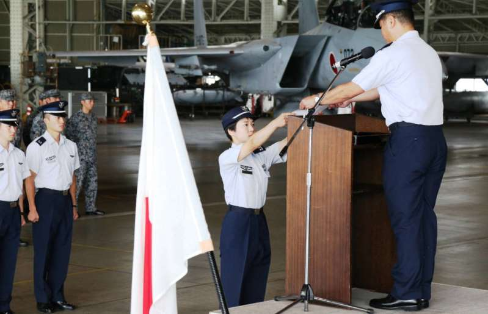

“Desde que vi por primera vez ‘Top Gun’ cuando estaba en el colegio, siempre he admirado a los pilotos de combate”. Misa Matsushima aún no había nacido cuando se estrenó la mítica película protagonizada por Tom Cruise en 1986, pero ya de pequeña tenía claro su sueño. El ejército japonés lo ha hecho posible este viernes tras nombrarla oficialmente parte del cuerpo más exigente.
La teniente Matsushima ingresó en las fuerzas aéreas niponas en 2014 tras graduarse en la Academia de Defensa Nacional y, cuatro años después, ha conseguido concluir su entrenamiento. Ahora forma parte de las 13.707 mujeres que defienden el país, lo que supone apenas un 6% del total, según explica la Fuerza de Autodefensa del Aire de Japón (JASDF) en un comunicado. No en vano, espera servir de “inspiración” para que otras mujeres den el paso: “Yo abriré el camino . Trabajaré duro para cumplir con las expectativas creadas y para mostrar mi gratitud hacia las personas que confiaron en mí”, asegura en declaraciones recogidas por CNN.
